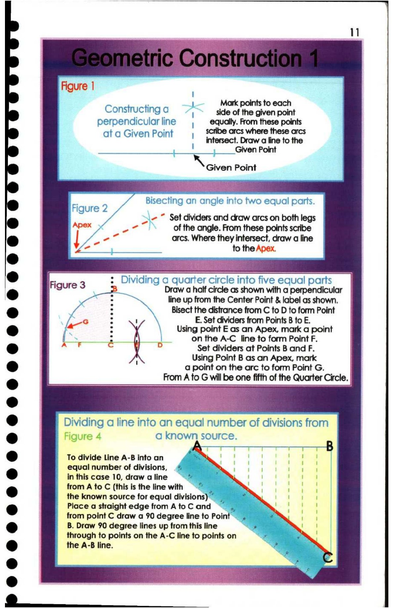

11. Geometric Construction 1

11
Figure |
aaeeaee Mark points to each
Constructing a > side of the given point
perpendicular line , equally. From these points
ata Given Point | scfbearcs where these arcs
_ intersect. Draw a line to the
_ tia Grn Point
ee Point
5 ae Bisecting an angle into two equal parts
- if De * Set dividers and draw arcs on both legs
a, of the angle. From these points scribe
e { fm arcs. Where they intersect, draw a line
ae _.4. fo the Apex.
@ Fi 3 : Dividing a quarter circle into five equal parts
e Pace 22 Draw a half circle as shown with a perpendicular
fee line up from the Center Point & label as shown.
@ 3 m4 \ Bisect the distrance from C to D to form Point
page ky E. Set dividers from Points B to E.
@ ja ; Using point E as an Apex, mark a point
; fl 1 on the A-C line to form Point F.
r ) Set dividers at Points B and F.
; Using Point B as an Apex, mark
& a point on the arc to form Point G.
e From A to G will be one fifth of the Quarter Circle. |
@ | Dividing a line into an equal number of divisions from |
e@ Figure 4 a known source.
i T $B q
@ | To divide Line A-B into an SES.
equal number of divisions, mai 1 « 6 oe
@ in this case 10, draw a line % :; oa
* from A to C (this is the line with 7 ee
| the known source for equal divisions)" ‘ 1 a 3 0a
@ _ Place a straight edge from AtoC and ~~ | eae | i |
from point C draw a 90 degree line to Point — 2 eee
t ) _ B. Draw 90 degree lines up from this line * A.W :
through to points on the A-C line to points on ‘ a |
@ | the A-B line. Si j